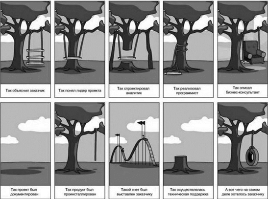

Процесс разработки программных систем тесно связан с областью управления проектами, потому что любой программный продукт является уникальным результатом. От организации этого процесса напрямую зависят основные характеристики выполнения программного проекта – сроки выполнения, запланированный бюджет, качество выпускаемого продукта.
Наглядно все проблемы программной инженерии прекрасно иллюстрирует следующая картинка.
Типичный процесс создания продукта, или "решения" (поскольку продукт решает проблему заказчика), как любят говорить в Microsoft.
Здесь мы видим все проблемы программной инженерии, в частности проблемы с коммуникацией и пониманием, вызванные отсутствием четкой спецификации создаваемого продукта.
Процесс современной разработки программного обеспечения ориентирован на жизненный цикл программного продукта. Все существующие в настоящее время технологии, методики и стандарты напрямую или косвенно касаются или регламентируют этапы жизненного цикла, как по функциональному наполнению, так и по содержанию. Процесс разработки программных систем тесно связан с областью управления проектами, потому что любой программный продукт является уникальным результатом. От организации этого процесса напрямую зависят основные характеристики выполнения программного проекта – сроки выполнения, запланированный бюджет, качество выпускаемого продукта. Но профессиональное управление проектами само по себе не может обеспечить достижение указанных характеристик. Немаловажную роль в этом играет архитектура программной системы, опыт и квалификация участников команды разработки, а также правильное документирование всех процессов разработки программного обеспечения.
Существуют различные определения технологии разработки программного обеспечения. К наиболее распространенным относятся следующие.
Технология разработки программного обеспечения (ТРПО) – это совокупность процессов и методов создания программного продукта.
Технология разработки программного обеспечения – это система инженерных принципов для создания экономичного ПО, которое надежно и эффективно работает в реальных компьютерах. Данное определение имеет частный характер, поскольку учитывает только две из шести характеристик качества ПО – надежность и эффективность. С учетом этого можно сформулировать более общее определение.
Технология разработки программного обеспечения – это система инженерных принципов для создания экономичного ПО с заданными характеристиками качества.
Любая технология разработки ПО базируется на некоторой методологии.
Под методологией понимается система принципов и способов организации процесса разработки программ.
Цель методологии разработки ПО – внедрение методов разработки программ, обеспечивающих достижение соответствующих характеристик качества.
В 80-е только 14% проектов по созданию ПО завершались успешно. Но и сегодня - процент успешно завершенных проектов составляет всего 26%.
В СССР достижения в области производства ПО были значительно лучшими. Тому способствовали следующие объективные предпосылки:
- плановая организация производства оптимально сочеталась с каскадной моделью разработки ПО;
- контроль успешности проекта был ориентирован не на удовлетворение требований заказчика, а на удовлетворение изначально согласованного ТЗ;
- разработкой ПО занимались, как правило, высококвалифицированные специалисты в специализированных институтах;
- поскольку проекты в основном ориентировались на ВПК, бюджеты были фактически не ограниченными (по сегодняшним меркам).
Но по ряду причин советская школа разработки ПО прекратила свое развитие и многие достижения были утрачены.
Программирование, несмотря на интеллектуальность и творческий характер этой деятельности, нуждается в организации и регламентировании, наборе соглашений и правил, не говоря уже об инструментальном обеспечении.
Сам русский термин «технология программирования» был введен русским академиком Андреем Петровичем Ершовым.
Он трактовал термин «программирование» в обобщенном виде и подразумевал все виды деятельности, выполняемые в ходе создания программных систем.
На западе для определения этой деятельности использовался термин «engineering». Сейчас обобщённый термин, применимый к созданию программных средств, обозначают как «разработка» или «конструирование». Справедлива формула: разработка = анализ + проектирование + программирование (кодирование) + тестирование + отладка.
Иногда сюда также включают “сопровождение”. Чтобы подчеркнуть промышленно-производственный аспект, говорят о “технологии разработки” или “технологии конструирования”.
Только в начале 90-х Британское сообщество вычислительной техники (British Computer Society) стало присваивать разработчикам программ звание инженера. В США только в 1998 году стало возможным хоть где-то зарегистрироваться в качестве профессионального инженера программного обеспечения. Но по-прежнему, даже в начале нынешнего века, общепризнанным остается тот факт, что разработке программного обеспечения не достает достаточно развитой научной базы.
С момента зарождения технология разработки программ испытала несколько подъемов в своем развитии. Один из них связан с публикацией письма Эдстера Дийкстры (Edsger Dijkstra) в Ассоциацию вычислительной техники, озаглавленного так: «О вреде использования операторов GOTO» (GOTO statement considered harmful, 1968). В те времена программы писались с активным использованием операторов безусловного перехода. Обращая внимание на недостатки таких программ, Дийкстра предложил свою концепцию структурного программирования, позволяющую избежать использования таких операторов. Концепция Дийкстры основывалась на том наблюдении Бема и Якоби (Flow Diagrams, Turning Machines and languages with only two formation rules, 1966), что для записи любой программы в принципе достаточно только трех конструкций управления – последовательного выполнения, ветвления и цикла. То есть теоретически необходимость в использовании операторов перехода отсутствует.
Следующий шаг в развитии структурного программирования связан с введением аппарата функций, позволяющих разбивать структурную программу на обозримые по своим размерам части.
При таком подходе программа пишется в терминах вызова функций верхнего уровня, которые реализуются при помощи функций более низкого уровня. Нисходящее программирование еще так же называли модульным программированием.
Структурным программам недоставало одного важного свойства – в их структуре непосредственно не отображалась сущность предметной области. Из-за этого было трудно их модифицировать в условиях изменяющихся требований.
Позднее возникла парадигма объектной ориентированности. Она основана на использовании объектов, объединяющих в себе данные и функциональность. На ОО парадигме основаны многие современные языки и системы программирования.
Генри Форд совершил революцию в производстве автомобилей, когда заметил, что узлы автомобиля можно стандартизировать, так что при сборке автомобилей данной модели можно будет использовать любой экземпляр требуемого узла. В настоящее время признается возможность при разработке одних приложений использовать идеи, архитектуру, проект и исходный код других приложений. Если приложения проектируются таким образом, что различные их части могут быть использованы многократно, то в конечном итоге это приводит к уменьшению стоимости разработки приложений. Однако, чтобы это было возможным, приложения должны быть модульными. Модульность приложения, собственно, и означает, что оно состоит из легко идентифицируемых и заменяемых частей. Таким образом, при правильном проектировании программного продукта особое внимание должно уделяться модульности, особенно на стадии разработки архитектуры.
К формальным методам проектирования относятся те методы, которые основаны на математике. Формальные методы помогают решить задачи обеспечения надежности программ. Они могут быть применены как при анализе требований для обеспечения точности формулировки требований, так и в процессе реализации для обеспечения соответствия кода программы сформулированным требованиям. Как правило формальные методы используют математику в ее логическом аспекте. В вычислительном же аспекте математика задействована в связи с использованием метрик, которые мы будем рассматривать далее.
Сегодня существует огромное количество различных процессов для создания ПО. Тем не менее, именно технологий, рассматривающих полный жизненный цикл проекта разработки ПО, сочетающих в себе научный подход, серьезную базу исследований и имеющих историю реального использования и адаптации, относительно немного.
Из методологий и технологий, получивших определенное признание на данный момент, можно назвать следующие: Datarun, CMM, Microsoft Solution Framework (MSF), Oracle Method, Rational Unified Process (RUP), SADT (IDEFx). Особое место в этом списке занимает технология компании Rational Software. В ее методологии применен наиболее современный процессоориентированный подход: так как разработка ПО является производством, то, как и на всяком производстве, при выявлении проблем в продукции (симптомов) необходимо корректировать процесс (устранять причины). Особенностью этой технологии является то, что в ее создании участвуют ведущие методисты в области разработки ПО, такие как Г. Буч (ООАП), Дж. Рамбо (ОМТ), А. Джекобсон (Objectory), внесшие весомый вклад в теорию и практику разработки современного ПО. Кроме того, следует заметить, что эта технология развивалась и проходила проверку с участием военного ведомства США